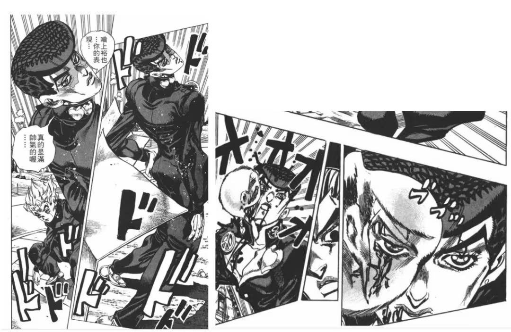
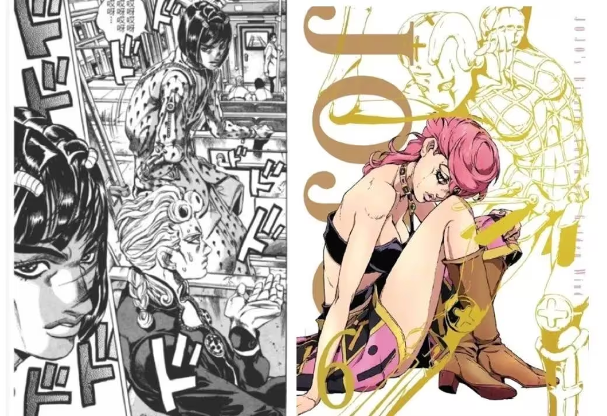

在杂志扉页上，「For All『JOJO』Lovers！」的标语被印于历代主角速写之间，那些与《JOJO》相关的记忆也伴随这行醒目的slogan而渐次清晰：从昭和到平成，从英国贵族、意大利「牛郎」再到美式辣妹，JOJO世代传承的「黄金精神」激励了无数人，更一路陪伴了他们度过了漫长而又短暂的青春。
在连载的35年间，JOJO们的形象经历了某种审美观念上的演进，他们的存在也同时丰富了日本漫画的类型与想象。
众所周知，荒木飞吕彦不仅是一位漫画家，更是一位被漫画事业耽搁的 “时装设计师”。JOJO独树一帜的风格引起了各大红蓝血品牌的青睐，近十年以来，JOJO已经和BVLGARI，GUCCI，Balenciaga等品牌都有过联动。甚至在2009年，卢浮宫展出了短篇《岸边露伴卢浮宫之行》，这也是卢浮宫唯一一次展出日漫。
JOJO们的形象流变：
从世纪末硬汉到五彩斑斓的「模特」
.jpg)
连载于1987～1992年间的前三部《JOJO》（《幻影之血》《战斗潮流》《星尘远征军》）有着较为统一的「硬汉」风格和男子气概：人物肌肉虬结，力量感十足，战斗场面注重表现肉体对抗时的冲击感与爆发力。
前三部的故事主线也较为符合当时少年漫企划的惯例，不论是乔斯达家族与迪奥之间的纠葛，还是乔瑟夫与西撒、埃及五人组与伊奇之间的互动，主角的动机必须是类似「正义」、「友情」一类，能够映照读者自然的伦理感，并较受欢迎的动机，这显然与《少年Jump》「友情·努力·胜利」的三大原则相匹配。

中后期的东方仗助战斗图
变化则从第四部《不灭钻石》开始。在这一部《JOJO》中，荒木笔下的人物线条呈现出一种从硬朗到洗练的过渡风格，画法也逐渐从早期的石膏素描式转向时装模特式。其中最为典型的细节便是东方仗助的眉毛。
1970年代的日本漫画界，剧画的影响犹在，男性角色与粗眉毛成为了一种标配，齐藤隆夫（《骷髅13》）、水岛新司（《大饭桶》）等经典漫画家都为主角选择了较为粗重的平眉，以强化人物的硬朗健硕与棱角分明。荒木也受此影响，从乔纳森到承太郎，JO家好儿郎拥有清一色的粗平眉，粗壮、粗犷、粗砺……连东方仗助初登场时也顶着一对粗眉，眉心聚拢，「不良少年」的形象跃然纸上。在漫画中后期，仗助的眉尾明显变细，上挑的眉峰也在一定程度上柔化了他的面部轮廓，其形象也朝向四肢纤细修长的少年发展。
.jpg)
随后的两部《JOJO》更是将中性气质与女性形象进一步放大。在第五部《黄金之风》中，荒木不仅启用女性角色特莉休作为线索式主角之一，更令乔鲁诺（JOJO）和布加拉提形成了一种对位，二者共同构成了本作兼具神性与现代性的「圣母」式主角。
参考自米开朗琪罗《大卫》的发型，却在那不勒斯的海风中更显张扬和恣意，浓密纤长的睫毛，不再夸张的手臂肌肉，搭配造物主般的替身能力，说乔鲁诺是神遗留的温柔似乎也不为过。布加拉提的「妹妹头」更不必说，蕾丝胸衣搭配健硕胸肌，温柔地保护着所有人——尽管在生理性别上是男性，但不论是形象气质还是人物设定，他们都是无关性别的救赎者。
.jpg)

第六部《石之海》，空条徐伦以某种开创性的女性面貌正式登场。
就角色风格而言，徐伦几乎没有「大和抚子」式的气质，连肌肉线条都充满无性别的力与美，即便在成长为坚毅顽强的战士之前，她也是有勇有谋的鬼马少女。
在这个意义上讲，徐伦已然具有苏珊·桑塔格所说的「camp」（坎普）特质：「一个人的性吸引力的最精致的形式在于与他的性别相反的东西。男性化的女子肯定是坎普感受力的最伟大意象之一。」
JOJO们的形象似乎呈现了某种性别观念上的尝试，从传统的男女二元设计到走向五彩斑斓的泛性化主角，并且在饱满的色彩和丰沛的人物情感加持下充满性张力。
这与世纪之交逐渐开放的文化环境密不可分，也与荒木本人不断成熟的审美观息息相关。 尽管如此，《JOJO》的内核却始终未变：